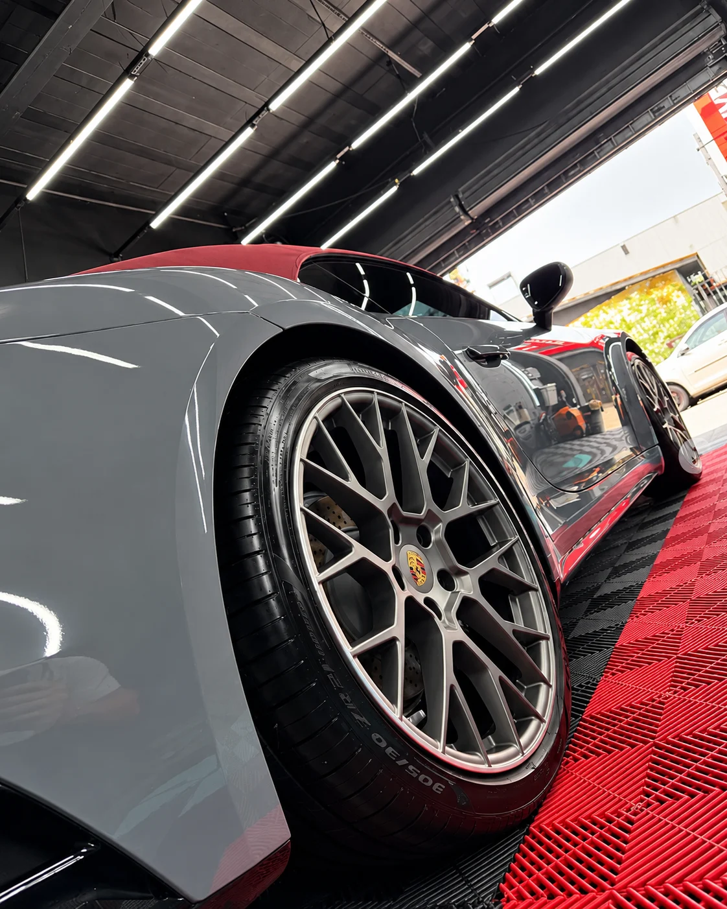
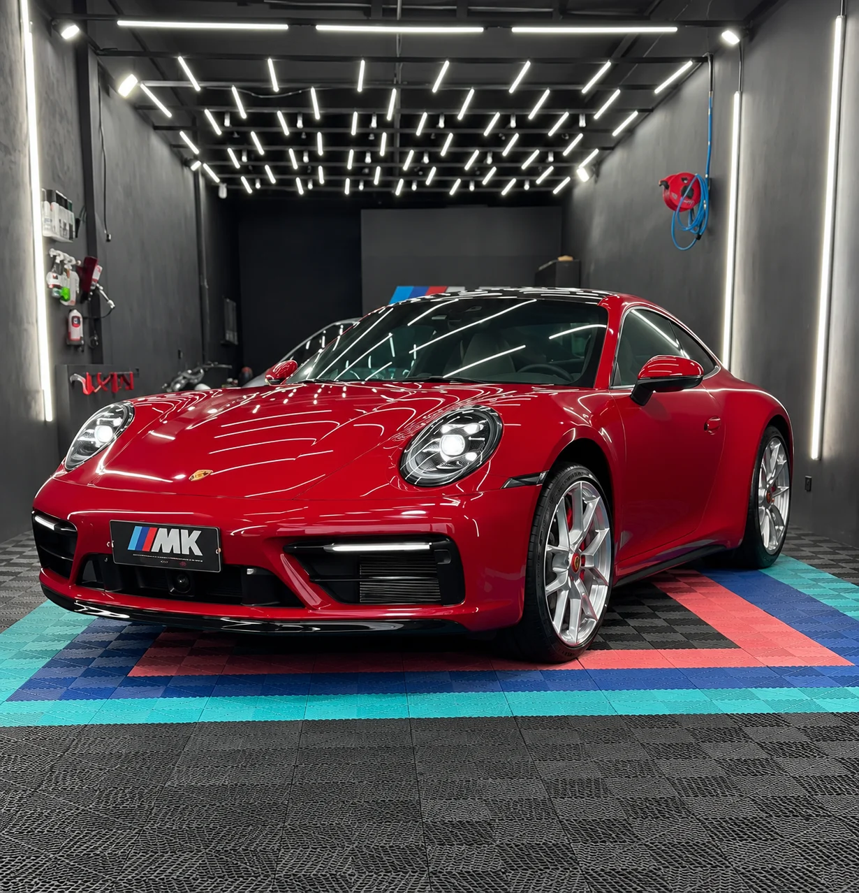
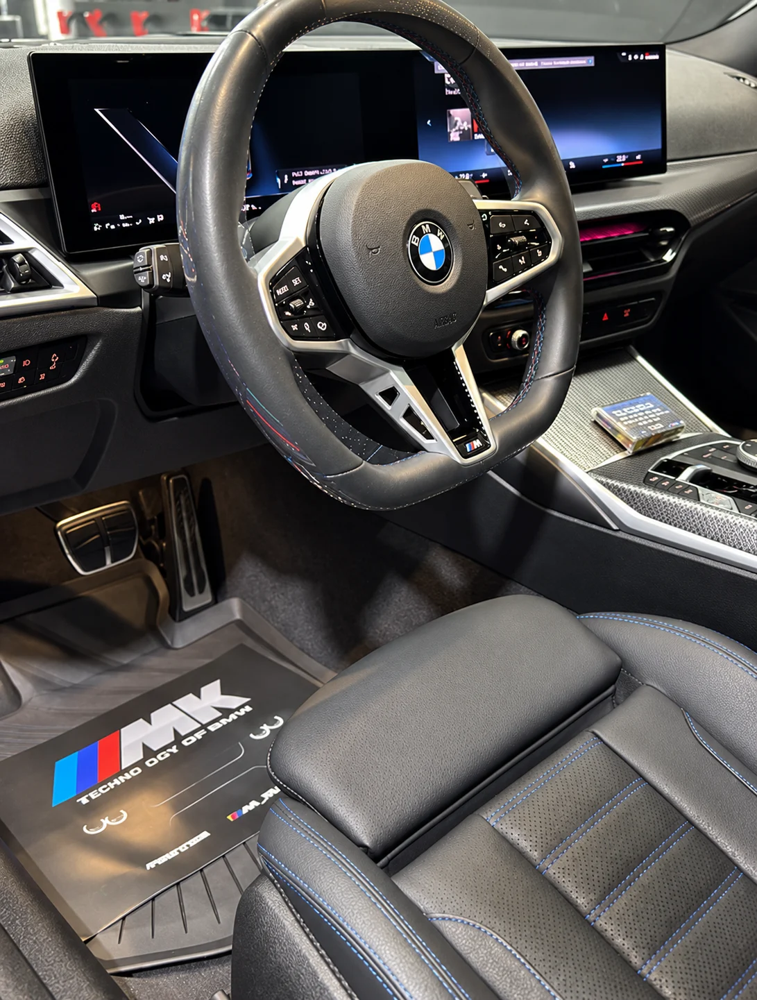
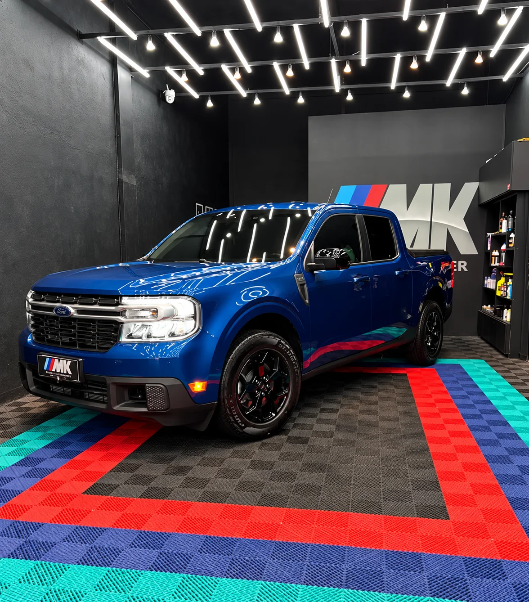
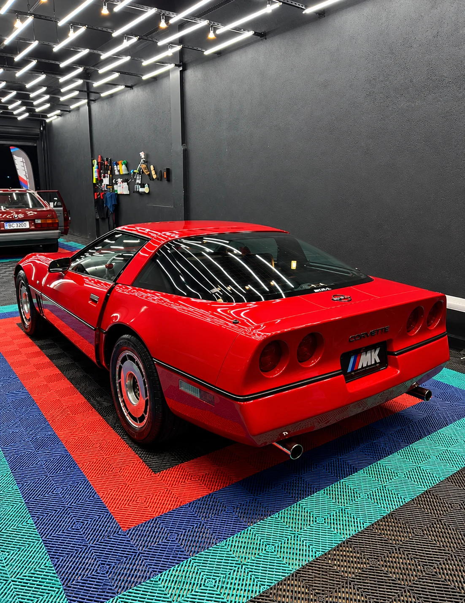
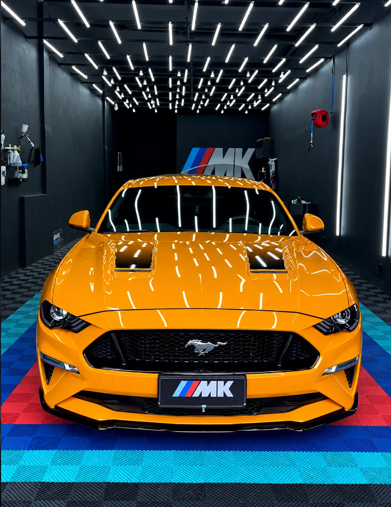
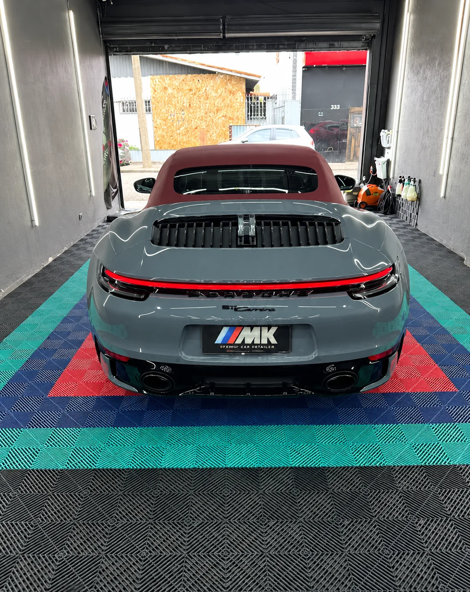
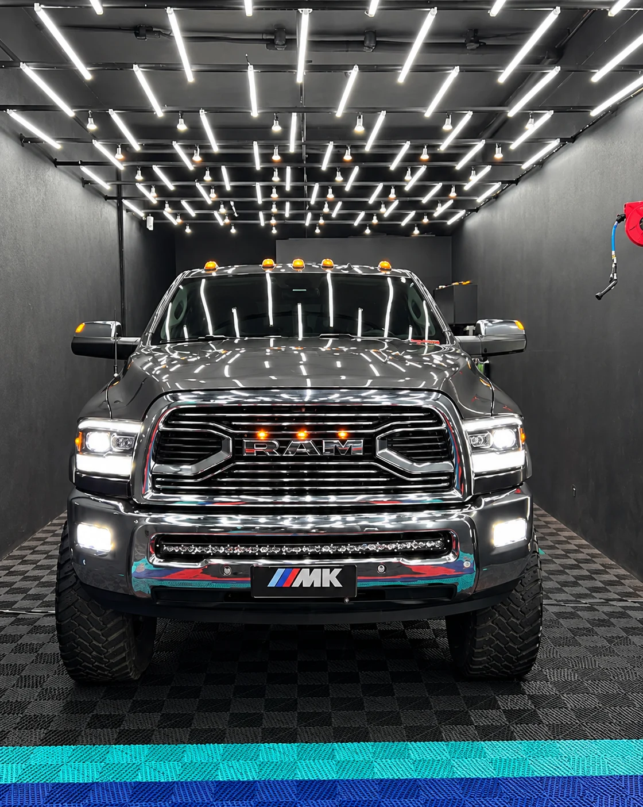
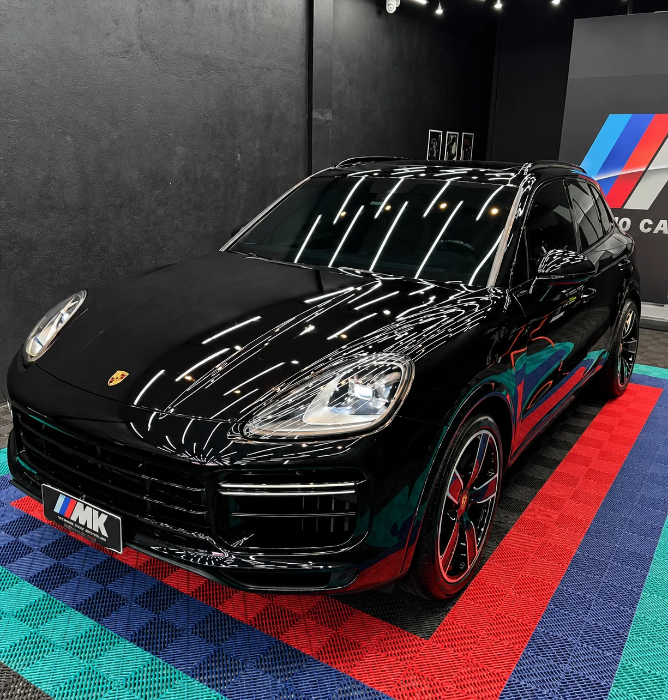
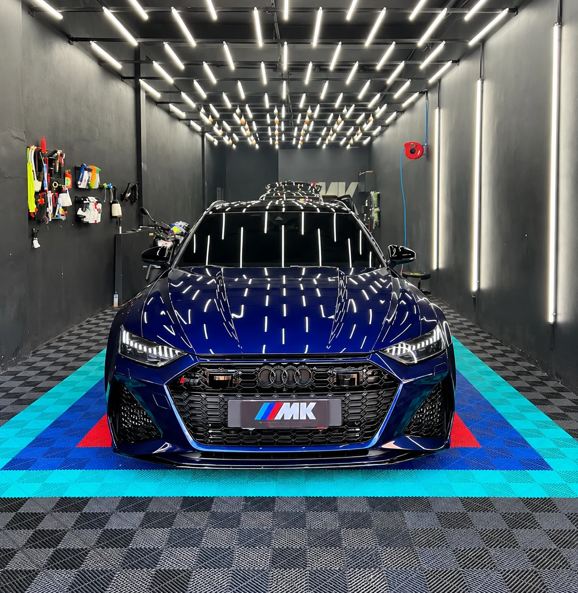

01 / MK STUDIOPPF — película de proteção
Uma película transparente para ajudar a preservar a pintura contra pequenas marcas e impactos do uso diário.
R$ 1.800,00Preço fictício · apenas demonstração
Ver serviço
Um cuidado que se vê no brilho.
Uma diferença que se sente em cada detalhe.
Da limpeza completa à proteção da pintura, encontre o cuidado ideal para o seu veículo.Fotos do studio. Imagens de apresentação, sem representar a execução de cada serviço.

01 / MK STUDIOUma película transparente para ajudar a preservar a pintura contra pequenas marcas e impactos do uso diário.

02 / MK STUDIOLimpeza cuidadosa dos bancos, carpetes e superfícies internas, respeitando cada material.

03 / MK STUDIOLimpeza externa e interna para renovar a apresentação do veículo com atenção aos detalhes.

04 / MK STUDIOAvaliação e tratamento de imperfeições superficiais para realçar o brilho e a profundidade da pintura.

05 / MK STUDIOProteção da pintura que ajuda a manter o brilho e facilita a manutenção do veículo.

06 / MK STUDIOUm cuidado minucioso dos acabamentos e superfícies, planejado para as necessidades do seu carro.

07 / MK STUDIOLimpeza criteriosa da carroceria e das rodas, com técnicas e produtos adequados às superfícies.

08 / MK STUDIOAcabamento com cera para realçar o brilho e oferecer uma camada de proteção à pintura.
Cuidado específico para os materiais do interior, com limpeza e acabamento conforme avaliação.
Limpeza técnica do compartimento do motor, respeitando os componentes e os cuidados específicos do veículo.

11 / MK STUDIOTratamento da superfície dos vidros para favorecer o escoamento da água e facilitar os cuidados.
Avaliação e reparo de pequenos amassados, buscando preservar a pintura original quando possível.
Opções de películas para os vidros, com escolha conforme as necessidades do veículo e regras aplicáveis.
Um olhar sobre os carros que passam pela MK.
Veja os detalhes nas fotos do studio.Estética automotiva é um ofício de paciência e técnica. É olhar para cada superfície com atenção e entender que um bom acabamento começa muito antes do resultado final.
Uma conversa para entender o veículo e o que você procura.
Um espaço para quem aprecia a experiência de um carro bem cuidado.
Eu tinha comprado o carro recentemente e o antigo proprietário tinha utilizado produtos inadequados nos estofados, que deixou com um aspecto esbranquiçado, que sinceramente me incomodou bastante. Expliquei ao Fábio, que por sua vez me…
Trecho da avaliaçãoÓtimo atendimento. Serviço feito no dia e horário marcado. Película nanocarbo e antivandalismo perfeitos para sua proteção.
Excelente serviço. Realizei um serviço de colocação de Insulfilm com proteção antivandalismo no meu veículo e ficou excelente. Além de estar mais seguro, deixou meu carro com outra cara. Produtos de ótima qualidade. O serviço prestado…
Trecho da avaliaçãoPolimento técnico sensacional! Meu carro estava bem castigado pelas viagens, estrada e riscos do dia a dia, e o resultado ficou incrível. Dá até outra autoestima ver o carro assim novamente. Muito obrigado ao Fábio pelo cuidado e capricho do início ao fim. Com certeza voltarei e recomendo demais! Forte abraço.
Realizei o serviço de vitrificação no meu veículo e tive uma ótima experiência. Além da vitrificação é realizado uma lavagem técnica e toda a preparação do carro antes da aplicação do vitrificador.…
Trecho da avaliaçãoAtendimento impecável do Fábio. Atencioso, explicou todos os benefícios do procedimento de vitrificação. O trabalho ficou muito bom. Mesmo sendo um veículo 0km é visível o que o procedimento faz. Recomendo 100%
Serviço excelente! Fiz polimento e vitrificação, e não poderia ter saído melhor! Recomendo fortemente a MK Studio
Trabalho impecável! Total cuidado em todos os detalhes do carro. Atendimento excelente, serviço rápido e resultado acima do esperado.
Conheci o MK Studio Car Detailer por indicação de uma amiga, ótimo atendimento, serviço e preço. Fui para lavar o carro e acabei contratando também polimento e instalação do insulfilme, tamanho a qualidade dos serviços. Super recomendo! Obrigada Fabio pelos serviços e atendimento. Sucesso para você! 🙌🏼👏🏻
Trecho da avaliaçãoMelhor lugar para quem gosta de atendimento top, produtos de melhor qualidade e claro o melhor serviço. Da de 1000 a 0 em qualquer concessionária. Fabio arrasa demais.
Explicação e serviço extremamente perfeitos, fiz vitrificação e limpeza interna do carro e parecia q tinha tirado ele da concessionária. Otimo serviço!!
Fabio é um excelente profissional, serviço nota mil, já lavei com ele, já coloquei Insulfilm, já coloquei PPF em todas as vezes sai satisfeito com o serviço. Indico a conhecerem.
Atendimento excelente. Fabio gente boa e ótimo profissional. Virei cliente!
Atendimento incrível e serviço impecável! São muito atenciosos e atentos aos detalhes, tenho dois filhos pequenos e o carro sai da MK Studio parecendo carro novo, limpissimo por dentro e por fora, e com cheirinho de carro novo. Super recomendo!!!
Conte o que seu carro precisa. Envie sua solicitação pelo WhatsApp e combine os detalhes com o studio.
O envio é uma solicitação.
A disponibilidade será combinada pelo WhatsApp.
R. das Catileias, 48 - Vila Nova Mazzei, São Paulo - SP, 02314-070
Horários de atendimento a confirmar.
Abrir no Google Maps